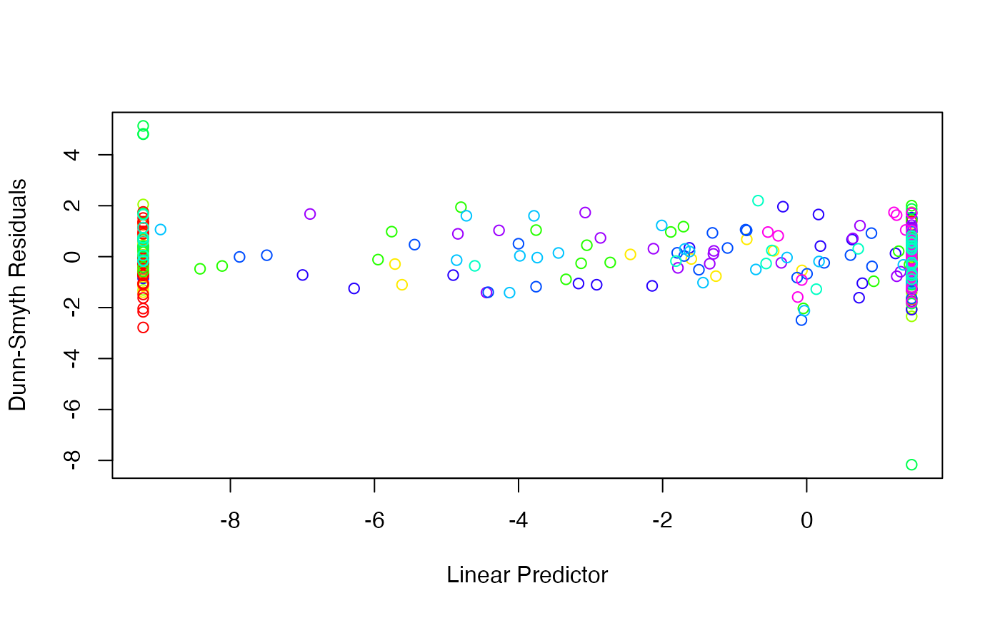

manyany.Rdmanyany is used to fit many univariate models (GLMs, GAMs, otherwise) to high-dimensional data, such as multivariate abundance data in ecology. This is the base model-fitting function - see plot.manyany for assumption checking, and anova.manyany for significance testing.
an object of class "formula" (or one that
can be coerced to that class): a symbolic description of the
model to be fitted. The details of model specification are given
under Details.
a character string giving the name of the function for the univariate model to be applied. e.g. "glm".
a description of the error distribution function to be used
in the model, either as a character string, a family object, or
a list of such objects, one for each response variable in the dataset. Such a
list enables the fitting of models with different distributions for different
responses. See Details for the families currently supported.
an optional data frame containing predictor variables (a matrix is also acceptable).
logical. FALSE (default) fits a separate model to each species. TRUE fits a single model to all variables, including site as a row effect, such that all other terms model relative abundance (compositional effects).
a factor specifying the sampling level to be resampled. Default is resampling rows (if composition=TRUE in the manyany command, this means resampling rows of data as originally sent to manyany).
what to return from each model fit: "details" (default) includes predicted values and residuals in output, "models" also returns the fitted objects for each model, "none" returns just the log-likelihood (mostly for internal use).
the power parameter, if using the tweedie distribution.
Default set to exclude (for details see
na.exclude) to avoid errors when NA's in predictors.
further arguments passed to the fitting function.
an object of class "manyany", usually, a result of a call to
manyany.
how many digits to include in the printed anova table.
manyany can be used to fit the model type specified in fn to many variables
simultaneously, a generalisation of manyglm to handle other model types.
It should be able to handle any fixed effects modelling function that has
predict and logLik functions, and that accepts a family argument,
provided that the family is on our list (currently 'gaussian', 'poisson', 'binomial',
'negative.binomial' and 'tweedie', although models for ordinal data are also accepted
if using the clm function from the ordinal package). Models for manyany
are specified symbolically, see for example the details section of lm
and formula.
Unlike manyglm, this function accepts family functions as arguments
instead of just character strings, giving greater flexibility. For example, you could
use family=binomial(link="probit") to fit a model using the probit link, rather
than being restricted to the default logit link or cloglog links available in manyglm.
A data argument is required, and it must be a dataframe.
Setting composition=TRUE enables compositional analyses, where predictors are
used to model relative abundance rather than mean abundance. This is achieved by
vectorising the response matrix and fitting a single model across all variables, with
a row effect to account for differences in relative abundance across rows.
The default composition=FALSE just fits a separate model for each variable.
manyany returns an object inheriting from "manyany".
The function anova (i.e. anova.manyany) will produce a significance test comparing two manyany objects.
Currently there is no summary resampling function for objects of this class.
The generic accessor functions fitted.values, residuals, logLik, AIC, plot
can be used to extract various useful features of the value returned by manyany.
An object of class "manyany" is a list containing at least the
following components:
a vector of log-likelihood terms for each response variable in the fitted model.
the matrix of fitted mean values, obtained by transforming the linear predictors by the inverse of the link function.
the matrix of probability integral transform (PIT) residuals. If the fitted model is a good fit, these will be approximately standard uniformly distributed.
the linear fit on link scale. But for ordinal models fitted using clm, these values are for the first category only.
a vector of family arguments, one for each response variable.
the matched call.
the model.frame from the model for the last response variable.
a list of terms from the model for the last response variable.
Warton D. I., Wright S., and Wang, Y. (2012). Distance-based multivariate analyses confound location and dispersion effects. Methods in Ecology and Evolution, 3(1), 89-101.
data(spider)
spider = list(abund=spider$abund, x = as.matrix(spider$x))
## To fit a log-linear model assuming counts are negative binomial, via manyglm:
spidNB <- manyany(abund~x,"manyglm",data=spider,family="negative.binomial")
logLik(spidNB) # a number of generic functions are applible to manyany objects
#> 'log Lik.' -49.51101, -60.20230, -36.39022, -19.52376, -13.16926, -38.04373, -42.00720, -77.41203, -62.98501, -59.00716, -102.40402, -58.06324 (df=8)
## To fit a glm with complementary log-log link to presence/absence data:
PAdat = pmin(as.matrix(spider$abund),1) #constructing presence/absence dataset
spidPA <- manyany(PAdat~x,"glm",data=spider,family=binomial("cloglog"))
#> Warning: The binomial option of manyany currently assumes you have binary (presence/absence) response
#> Warning: The binomial option of manyany currently assumes you have binary (presence/absence) response
#> Warning: The binomial option of manyany currently assumes you have binary (presence/absence) response
#> Warning: The binomial option of manyany currently assumes you have binary (presence/absence) response
#> Warning: The binomial option of manyany currently assumes you have binary (presence/absence) response
#> Warning: The binomial option of manyany currently assumes you have binary (presence/absence) response
#> Warning: The binomial option of manyany currently assumes you have binary (presence/absence) response
#> Warning: The binomial option of manyany currently assumes you have binary (presence/absence) response
#> Warning: The binomial option of manyany currently assumes you have binary (presence/absence) response
#> Warning: The binomial option of manyany currently assumes you have binary (presence/absence) response
#> Warning: The binomial option of manyany currently assumes you have binary (presence/absence) response
#> Warning: The binomial option of manyany currently assumes you have binary (presence/absence) response
#> Warning: glm.fit: fitted probabilities numerically 0 or 1 occurred
#> Warning: glm.fit: fitted probabilities numerically 0 or 1 occurred
#> Warning: glm.fit: fitted probabilities numerically 0 or 1 occurred
#> Warning: glm.fit: algorithm did not converge
#> Warning: glm.fit: fitted probabilities numerically 0 or 1 occurred
#> Warning: glm.fit: algorithm did not converge
#> Warning: glm.fit: fitted probabilities numerically 0 or 1 occurred
#> Warning: glm.fit: fitted probabilities numerically 0 or 1 occurred
#> Warning: glm.fit: fitted probabilities numerically 0 or 1 occurred
#> Warning: glm.fit: fitted probabilities numerically 0 or 1 occurred
#> Warning: glm.fit: fitted probabilities numerically 0 or 1 occurred
#> Warning: glm.fit: fitted probabilities numerically 0 or 1 occurred
#> Warning: glm.fit: fitted probabilities numerically 0 or 1 occurred
#> Warning: glm.fit: fitted probabilities numerically 0 or 1 occurred
plot(spidPA)

# There are some wild values in there for the Pardmont variable (residuals >5 or <-8).
#The Pardmont model didn't converge, coefficients are a bit crazy:
coef(spidPA)
#> $Alopacce
#> [1] 12.610429 -4.275471 -1.578333 -7.465024 -7.668445 -5.689414 15.577355
#>
#> $Alopcune
#> (Intercept) xsoil.dry xbare.sand xfallen.leaves xmoss
#> 40.755529 1.046846 -1.148942 -8.796359 -3.651156
#> xherb.layer xreflection
#> 1.182889 -8.465781
#>
#> $Alopfabr
#> (Intercept) xsoil.dry xbare.sand xfallen.leaves xmoss
#> 22.477336 -3.660202 6.492114 -5.242130 -3.716355
#> xherb.layer xreflection
#> -6.171588 6.338843
#>
#> $Arctlute
#> (Intercept) xsoil.dry xbare.sand xfallen.leaves xmoss
#> -642.02191 156.42282 14.03597 -15.54365 13.55838
#> xherb.layer xreflection
#> 24.75965 26.73644
#>
#> $Arctperi
#> (Intercept) xsoil.dry xbare.sand xfallen.leaves xmoss
#> -49.907253 -34.069761 1.950086 18.654743 4.948556
#> xherb.layer xreflection
#> 5.614403 16.439577
#>
#> $Auloalbi
#> (Intercept) xsoil.dry xbare.sand xfallen.leaves xmoss
#> -20.4246306 -0.1104993 0.1761960 0.2060495 0.9017341
#> xherb.layer xreflection
#> 6.1801043 -2.0868843
#>
#> $Pardlugu
#> (Intercept) xsoil.dry xbare.sand xfallen.leaves xmoss
#> 7.2112726 -2.2498048 -0.6330969 0.3860805 -1.8652410
#> xherb.layer xreflection
#> 1.1984500 -0.5053049
#>
#> $Pardmont
#> (Intercept) xsoil.dry xbare.sand xfallen.leaves xmoss
#> 1.536923e+15 4.944832e+14 2.169316e+14 -9.526554e+14 6.714226e+14
#> xherb.layer xreflection
#> 3.166165e+14 -1.199994e+15
#>
#> $Pardnigr
#> (Intercept) xsoil.dry xbare.sand xfallen.leaves xmoss
#> 8.8165987 2.1726394 -0.3213910 -3.6870594 -0.7737974
#> xherb.layer xreflection
#> 1.1655606 -4.0442176
#>
#> $Pardpull
#> (Intercept) xsoil.dry xbare.sand xfallen.leaves xmoss
#> -6.4895684 2.3054120 -0.9864974 -1.3783855 0.8427496
#> xherb.layer xreflection
#> 1.8552056 -1.8123416
#>
#> $Trocterr
#> (Intercept) xsoil.dry xbare.sand xfallen.leaves xmoss
#> 14.7698864 0.7379789 -0.6458920 -0.5737068 -2.9745472
#> xherb.layer xreflection
#> -1.1634160 0.3764505
#>
#> $Zoraspin
#> (Intercept) xsoil.dry xbare.sand xfallen.leaves xmoss
#> 23.157371 9.268674 -1.004993 -11.209499 -2.727216
#> xherb.layer xreflection
#> 4.307227 -14.399385
#>
# could try again using the glm2 package to fit the models, this fixes things up:
if (FALSE) library(glm2)
if (FALSE) spidPA2<-manyany(PAdat~x,"glm",data=spider,family=binomial("cloglog"),method="glm.fit2")
if (FALSE) plot(spidPA2) #looks much better.
## To simultaneously fit models to ordinal data using the ordinal package:
if (FALSE) library(ordinal)
## First construct an ordinal dataset:
if (FALSE) spidOrd = spider$abund
if (FALSE) spidOrd[spider$abund>1 & spider$abund<=10]=2
if (FALSE) spidOrd[spider$abund>10]=3
## Now fit a model using the clm function:
if (FALSE) manyOrd=manyany(spidOrd~bare.sand+fallen.leaves,"clm",data=data.frame(spider$x))
if (FALSE) plot(manyOrd)